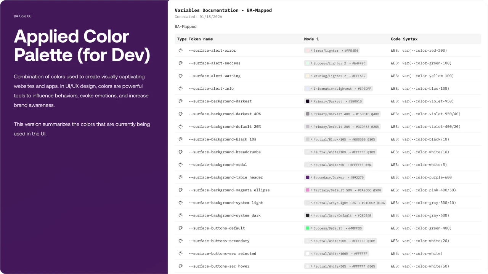
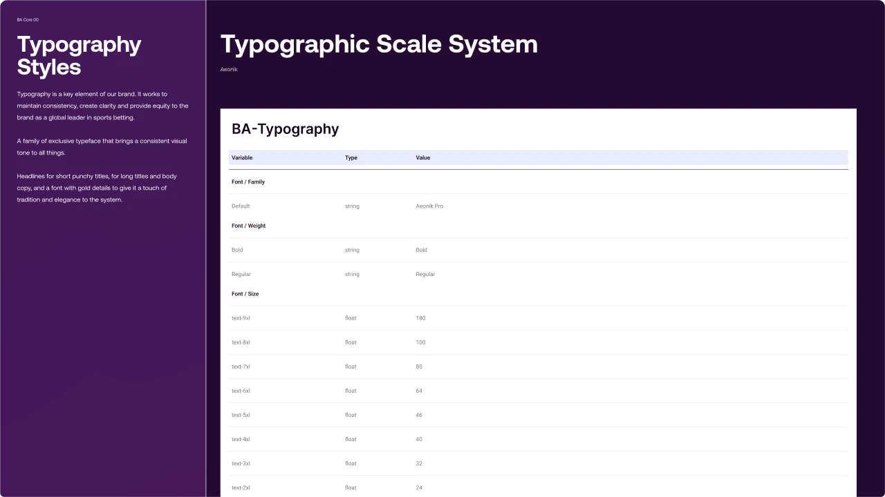
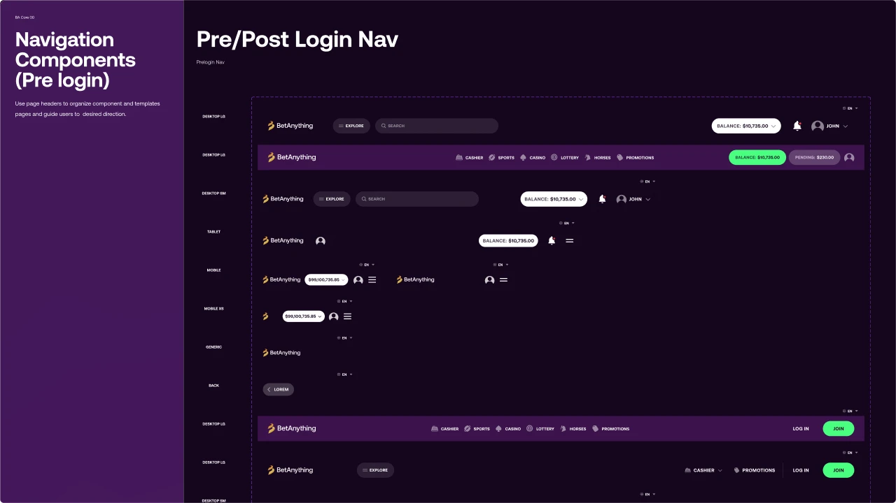
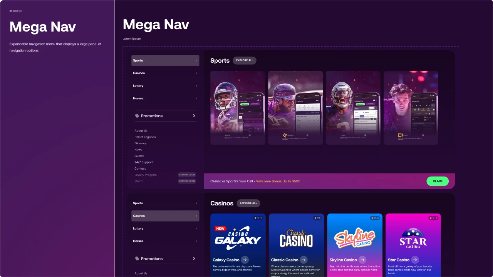
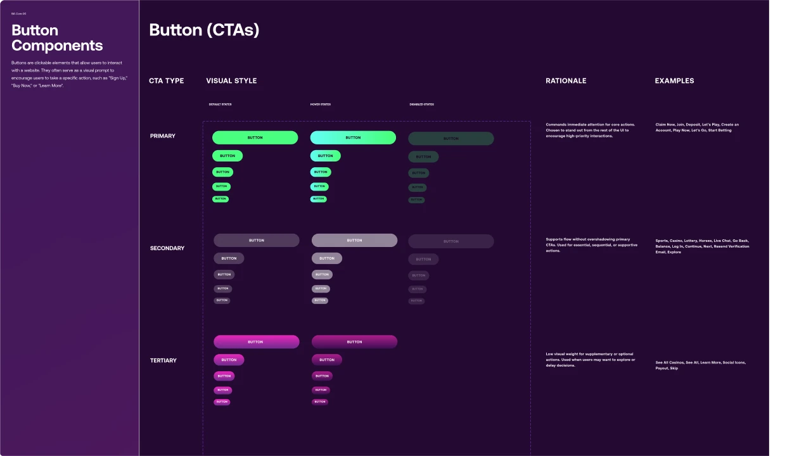
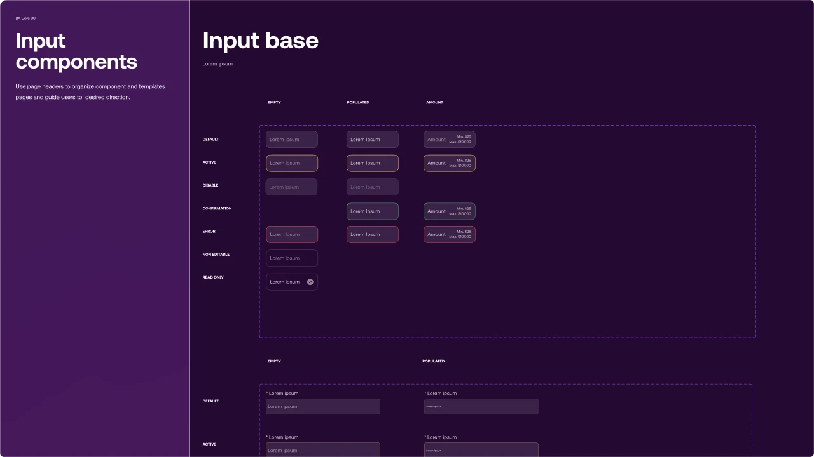
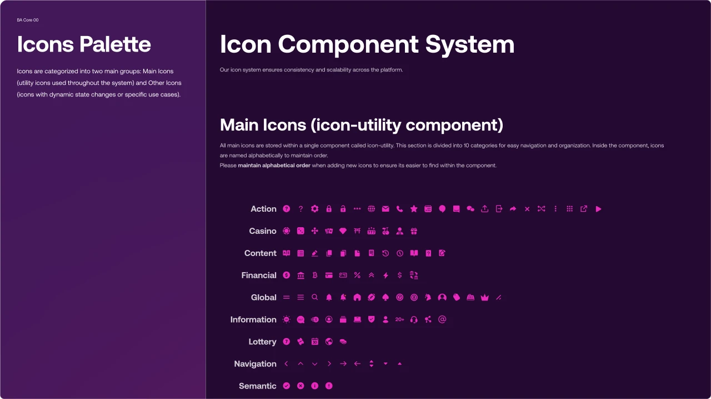
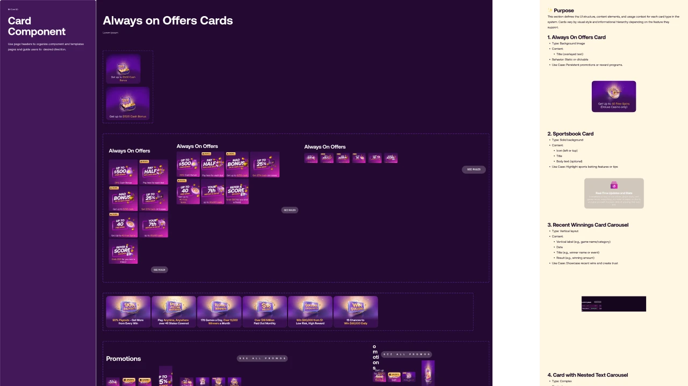

UX Senior · Platform Migration · Design System
Transforming Uncertainty
into Ownership
Overview
Large-scale betting platform migration — from external agency to internal UX practice. As UX Senior, I contributed hands-on to research, content strategy, wireframing, prototyping, usability studies, and a complete design system built from scratch with Rocket Air.
BetAnything Design System · Official Cover
Before / After · Platform
From a legacy platform with inconsistent interfaces to a modernized, cohesive experience with internal UX ownership.
Process
01
Research & Competitive Audit
Betting ecosystem analysis. Identification of UX patterns, accessibility gaps, and differentiation opportunities.
02
Information Architecture & Content Strategy
Complete architecture reconstruction. Sitemaps and userflows Pre/Post login. Content Strategy 2.0 for all verticals.
03
Wireframes & Usability Testing
Low-fi wireframes in cross-functional workshops. Usability studies feeding iteration.
04
Design System · BA Core
Complete system: Color, Typography, Iconography, Components, Breakpoints. Merged with Rocket Air.
05
High-Fidelity Prototyping & Delivery
Interactive prototypes as source of truth. Handoff to development with detailed specs.
IA V1.0 → V3.0 · Evolución Pre/Post Login
BA Content Strategy 2.0 · Final
Design System · BA Core 00


Applied Color Palette · Typographic Scale (Aeonik Pro)
Hero Component · Desktop & Mobile


Navigation Pre/Post Login · Mega Nav


Button CTAs · Input Components


Icon System · Card Components
Breakpoint System · SM / MD / LG
Outcomes
Growth in visits confirmed by post-migration SEO data. Platform migrated with cohesive and modernized UX. Internal team gained full UX ownership. BA Core design system now powers consistent design across multiple verticals.
"What I'd do differently: establish documentation habits earlier. Trust is built incrementally — well-documented artifacts are what continue to create value."
Confidentiality Note
Certain metrics have been modified or omitted due to confidentiality agreements.